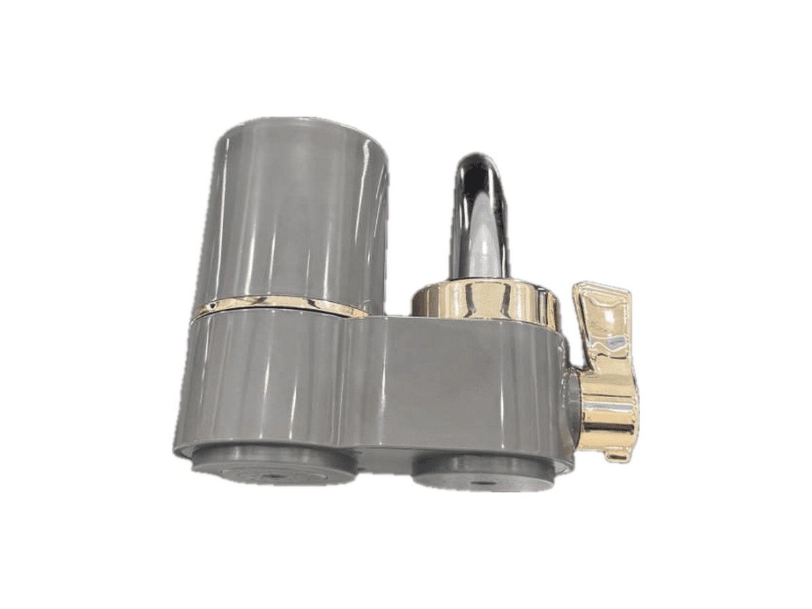

蛇口
蛇口RP-F01
クラシック蛇口フィルター
SKU: RP-F01
MOQ：お問い合わせ時に確認

蛇口フィルター
360°回転式蛇口フィルター（SG-LT-18）— 7バリエーション。RP-F02がファミリーを代表します。
RP-F02、RP-F03、RP-F04、RP-F05は同じ蛇口フィルターの最初の4バリエーションで、同じABS製ハウジングと形状を共有します。回転角度、タービンLED、バルブコア、切替が異なります：RP-F02 — 360°回転、セラミック＋GAC／CTO／UF＋GAC、RP-F03 — 水力タービンLEDブルーライトリングを追加、セラミック＋GAC／CTO、RP-F04 — 270°回転、セラミックバルブコア、タービンLED（SG-LT-27）、RP-F05 — セラミックバルブコア、PUSHボタン切替。さらに3バリエーションがファミリーに加わります：ホワイトカプセル蛇口浄水器（5段階ろ過、1ユニット＋4カートリッジ、145.7×66×67mm）、ブルーライト付きスリムハウジングのゴールド仕上げバリエーション、透明ビューワーウィンドウ付きステンレスバリエーション（2.5L/分、定格浄水量2000L、144×114×59mm）。仕様はモデルと注文ごとに確認します。
調節と仕上げのオプションはご注文ごとに確認いたします。
電圧／周波数は対象国に合わせて設定可能です。その他の構成は注文ごとに確認します。
RP-F02はキッチンの蛇口に取り付けて使用点で水をろ過する蛇口フィルターのファミリーです。7バリエーションが同じ発想を共有し、回転、カートリッジ、バルブ、切替が異なります。標準バリエーションはセラミック＋GAC、CTO、UF＋GACカートリッジを提供し、ファミリーには5段階カプセルバリエーションと透明ビューワーウィンドウ付きステンレスバリエーションも含まれます。キッチンラインに置きやすい蛇口フィルターの品ぞろえを求めるブランドオーナー向けです。
最小注文数量はいくつですか？
初回注文はモデルあたり200台、再注文は500台です。
大口注文の前にサンプルを注文できますか？
はい。サンプルは15日でご用意できます。サンプル費用は初回大口注文時に返金されます。大口注文はサンプル承認後40日で出荷し、FOB深圳条件となります。
どのバリエーションを注文すればよいですか？
RP-F02として見積もり、バリエーションを指定してください：360°スタンダード、タービンLED、270°セラミックバルブ、PUSHボタン、ホワイトカプセル、スリムゴールド、またはステンレスウィンドウ。
7バリエーション — RP-F02として見積もり、バリエーションを指定してください（360°スタンダード、タービンLED、270°セラミックバルブ、PUSHボタン、ホワイトカプセル、スリムゴールド、またはステンレスウィンドウ）。
バリアント画像にホバーすると仕様が表示されます。タッチ画面では画像をタップしてください。




7番目のバリエーション — スリムハウジング、ブルーライト付きゴールド仕上げ — は下の比較表に掲載されています。きれいな製品写真がまだないため、ここには画像を表示していません。
各バリエーションのフルスペックを並べて表示。下の仕様表はRP-F02の値です。
| 仕様 | RP-F02-1 — 360°スタンダード（SG-LT-18） | RP-F02-2 — タービンLED（SG-LT-18F） | RP-F02-3 — 270°セラミックバルブ（SG-LT-27） | RP-F02-4 — PUSHボタン (SG-LT-18A) | RP-F02-5 — ホワイトカプセルバリエーション（MJLTJSQDB01） | RP-F02-6 — スリムゴールド（SG-LT-18F） | RP-F02-7 — ステンレスウィンドウバリエーション（SG-LT-17B） |
|---|---|---|---|---|---|---|---|
| ハウジング | ABS | ABS | ABS | ABS | ご注文ごとに確認いたします | ABS | ステンレス |
| カートリッジオプション | セラミック＋GAC／CTO／UF＋GAC | セラミック＋GAC／CTO | セラミック＋GAC／CTO | セラミック＋GAC／CTO／UF＋GAC | 5段ろ過、本体1台＋カートリッジ4本；活性炭ヨウ素価≥1000 mg/g | セラミック＋GAC／CTO／UF＋GAC | セラミック＋GAC／CTO／UF＋GAC；7層ろ過 |
| 調節 | 360°回転 | 360°回転 | 270°回転 | ご注文ごとに確認いたします | ご注文ごとに確認いたします | 360°回転 | ご注文ごとに確認いたします |
| LEDオプション | — | 水力タービンLED | 水力タービンLED | — | — | ブルーライト（カタログ写真のとおり） | — |
| バルブコア | ご注文ごとに確認いたします | ご注文ごとに確認いたします | セラミック | セラミック | ご注文ごとに確認いたします | ご注文ごとに確認いたします | ご注文ごとに確認いたします |
| 切替 | レバー | レバー | レバー | PUSHボタン | ご注文ごとに確認いたします | ご注文ごとに確認いたします | レバー（原水／浄水モード） |
| 水源 | 水道水 | 水道水 | 水道水 | 水道水 | 水道水 | 水道水 | 水道水 |
| 純水流量 | ご注文ごとに確認いたします | ご注文ごとに確認いたします | ご注文ごとに確認いたします | ご注文ごとに確認いたします | ご注文ごとに確認いたします | ご注文ごとに確認いたします | 2.5 L/min |
| 定格浄水量 | ご注文ごとに確認いたします | ご注文ごとに確認いたします | ご注文ごとに確認いたします | ご注文ごとに確認いたします | ご注文ごとに確認いたします | ご注文ごとに確認いたします | 2000 L |
| 寸法 | ご注文ごとに確認いたします | ご注文ごとに確認いたします | ご注文ごとに確認いたします | ご注文ごとに確認いたします | 145.7 × 66 × 67 mm | ご注文ごとに確認いたします | 144 × 114 × 59 mm |
| 使用圧力 | ご注文ごとに確認いたします | ご注文ごとに確認いたします | ご注文ごとに確認いたします | ご注文ごとに確認いたします | 0.1–0.4 MPa | ご注文ごとに確認いたします | 0.1–0.4 MPa |
| 水温 | ご注文ごとに確認いたします | ご注文ごとに確認いたします | ご注文ごとに確認いたします | ご注文ごとに確認いたします | 5–38°C | ご注文ごとに確認いたします | 5–38°C |
ROPureOEMカタログの仕様 8 行。
| ハウジング | ABS |
|---|---|
| カートリッジオプション | セラミック＋GAC／CTO／UF＋GAC |
| 調節 | 360°回転 |
| 水源 | 水道水 |
| 定格流量／容量 | ご注文ごとに確認いたします |
| ろ過精度 | ご注文ごとに確認いたします |
| 圧力／温度 | ご注文ごとに確認いたします |
| カートリッジ寿命／寸法 | ご注文ごとに確認いたします |
仕様はROPureOEMカタログに基づいています。値がまだ確認されていない場合は「注文ごとに確認」と記載しています。未確認の数値は公表しません。